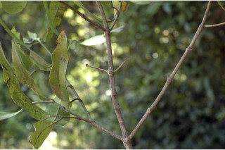
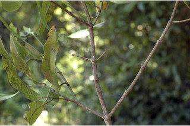
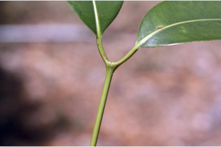
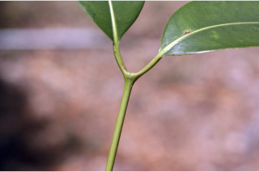
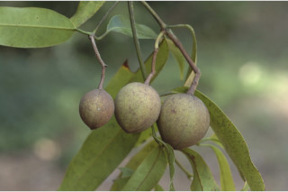
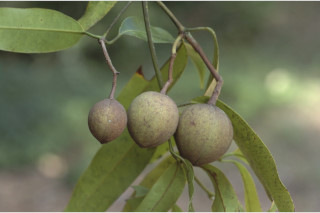

Trees, buttressed, often with stilt roots, up to 30 m tall.
30 ಮೀ ಎತ್ತರದವರೆಗೆ ಬೆಳೆಯುವ ಆನಿಕೆಗಳುಳ್ಳ ಮರಗಳು, ಅನೇಕ ಸಂಧರ್ಭಗಳಲ್ಲಿ ದಂಟು ಬೇರು ಸಮೇತವಾಗಿರುತ್ತವೆ.
വപ്രമൂലത്തോടും, ചിലപ്പോഴൊക്കെയും താങ്ങുവേരുകളുളളതുമായ, 35 മീറ്ററോളം ഉയരത്തില് വളരുന്ന വന്മരങ്ങള്.
மரங்கள், தாங்கு வேர்களுடையது (பட்ரஸ்டு), பெரும்பாலும் ஊன்றுகோல் வேர்களுடையது, 30 மீ. உயரம் வரை வளரக்கூடியது.
Bark brown, lenticellate; blaze pink.
ತೊಗಟೆ ಕಂದು ಬಣ್ಣ ಹೊಂದಿದ್ದುವಾಯು ವಿನಿಮಯ ಬೆಂಡುರಂಧ್ರಗಳ ಸಮೇತವಾಗಿರುತ್ತವೆ;ಕಚ್ಚು ಮಾಡಿದ ಜಾಗ ಕೆಂಪು ಬಣ್ಣದಲ್ಲಿರುತ್ತದೆ.
ശ്വസനരന്ധ്രങ്ങളോടുകൂടിയ, തവിട്ടുനിറത്തിലുള്ള പുറംതൊലി; വെട്ട്പാടിന് പിങ്കുനിറം.
மரத்தின் பட்டை ப்ரவுன் நிறமானது, பட்டை துளைகள் (லெண்டிசெல்) உடையது; உள்பட்டை பிங்க் நிறமானது.
Branchlets terete, glabrous.
ಕಿರುಕೊಂಬೆಗಳು ದುಂಡಾಗಿದ್ದು ರೋಮರಹಿತ -ವಾಗಿರುತ್ತವೆ.
അരോമിലവും, ഉരുതുമായ ഉപശാഖകള്.
சிறிய நுனிக்கிளைகள் குறுக்குவெட்டுத் தோற்றத்தில் வளையமானது, உரோமங்களற்றது.
Exudates resinous, not profuse.
ಜಿನುಗು ದ್ರವ ಅಂಟು ರೂಪದಲ್ಲಿದ್ದು ವಿರಳವಾ- ಗಿರುತ್ತದೆ..
ഏറെ സമൃദ്ധമല്ലാത്ത, കൊഴുത്ത സ്രവം.
பிசின் உடையது (ரெசின்), மிக குறைந்த அளவே உண்டாகின்றன.
Leaves simple, opposite, decussate; petiole 1-2 cm long, planoconvex in cross section, glabrous; lamina 10-29 x 3-9 cm; elliptic-oblong to lanceolate, apex caudate - acuminate, base acute or nearly attenuate, thickly coriaceous; midrib raised above; secondary_nerves many, slender, sometimes indistinct near margins due to mixing up with tertiary_nerves reticulation, nearly perpendicular to midrib; tertiary_nerves closely reticulate.
ಎಲೆಗಳು ಸರಳವಾಗಿದ್ದು,ಕತ್ತರಿಯಾಕಾರದ ಅಭಿಮುಖ ಜೋಡನಾ ವ್ಯವಸ್ಥೆಯಲ್ಲಿರುತ್ತವೆ; ಎಲೆತೊಟ್ಟುಗಳು 1 ರಿಂದ 2 ಸೆಂ.ಮೀ, ಉದ್ದಹೊಂದಿದ್ದು, ರೋಮರಹಿತವಾಗಿದ್ದು, ಅಡ್ಡ ಸೀಳಿದಾಗ ಸಪಾಟ ಪೀನಮಧ್ಯ ಆಕಾರವನ್ನು ಹೊಂದಿರುತ್ತವೆ; ಎಲೆಪತ್ರಗಳು 10 ರಿಂದ 29 ಸೆಂ. ಮೀ ಉದ್ದ,3 ರಿಂದ 9 ಸೆಂ ಮೀ ಅಗಲವಿದ್ದು, ಅಂಡಾಕಾರದಿಂದ – ಚತುರಸ್ರಾಕಾರ ದವರೆಗಿನ ಆಕಾರ, ಬಾಲರೂಪಿ – ಕ್ರಮೇಣ ಚೂಪಾಗುವ ಮಾದರಿಯ ತುದಿ,ಚೂಪಾಗಿ ಅಥವಾ ಬಹುಮಟ್ಟಿಗೆ ಒಳಬಾಗಿದ ತಳವುಳ್ಳ ಬುಡವನ್ನು ಹಾಗೂ ಮಂದವಾದ ತೊಗಲನ್ನೋಲುವ ಮಾದರಿಯಲ್ಲಿರುತ್ತವೆ; ಮಧ್ಯನಾಳ ಪತ್ರದ ಮೇಲ್ಭಾಗದಲ್ಲಿ ಉಬ್ಬಿರುತ್ತವೆ; ಎರಡನೇ ದರ್ಜೆಯ ನಾಳಗಳು ಹೆಚ್ಚಿನ ಸಂಖ್ಯೆಯಲ್ಲಿದ್ದು,ತೆಳುವಾಗಿರುತ್ತವೆ ಕೆಲವು ವೇಳೆ ಮೂರನೇ ದರ್ಜೆಯ ನಾಳಗಳ ಜಾಲಬಂಧ ನಾಳಗಳ ಜೊತೆ ಬೆರೆಯುವುದರಿಂದ ಅಸ್ಪಷ್ಟವಾಗಿರುತ್ತವೆ ಹಾಗೂ ಮಧ್ಯ ನಾಳಕ್ಕೆ ಹೆಚ್ಚೂ ಕಡಿಮೆ ಲಂಬವಾಗಿರುತ್ತವೆ;ಮೂರನೇ ದರ್ಜೆಯ ನಾಳಗಳು ಸೂಕ್ಷ್ಮ ಜಾಲಬಂಧನಾಳ ವಿನ್ಯಾಸದಲ್ಲಿರುತ್ತವೆ.
സമ്മുഖ, ഡെക്കുസേറ്റ് ക്രമത്തിലുള്ള ലഘുപത്രങ്ങള്; 1 സെ.മി മുതല് 2 സെ.മി വരെ നീളമുള്ളതും, അരോമിലവും, ഛേദത്തില് മുകള്ഭാഗം പരന്നും കീഴ്ഭാഗം ഉരുുമിരിക്കുന്ന ഘടനയുള്ള ഇലഞെട്ട്; പത്രഫലകത്തിന് 10 സെ.മി മുതല് 29 സെ.മി വരെ നീളവും 3 സെ.മി മുതല് 9 സെ.മി വരെ വീതിയും ദീര്ഘവൃത്താകാര-ആയതാകാരം തൊട്ട് കുന്താകാരം വരെ, പത്രാഗ്രം നീ വാലോടുകൂടിയതാണ്, പത്രാധാരം നിശിതമോ സാവധാനം നേര്ത്തവസാനിക്കുന്നതോ ആണ്, കട്ടിയേറിയ ചര്മ്മില പ്രകൃതം മുകളില് ഉയര്ന്ന് നില്ക്കുന്ന മുഖ്യസിര; മുഖ്യസിംരക്ക് ലംബമായി നില്ക്കുന്നതും നേര്ത്തതുമായ ധാരാളം ദ്വിതീയ ഞരമ്പുകള്. ഇവ ചിലപ്പോള് ത്രിതിയ ഞരമ്പുകളുടെ ജാലികകളുമായി യോജിക്കുന്നതിനാല് അരികുകളടുത്ത് അവ്യക്തമാണ്; വളരെ അടുത്ത ജാലിക തീര്ക്കുന്ന ത്രിതീയ ഞരമ്പുകള്.
இலைகள் தனித்தவை, எதிரடுக்கமானவை, குறுக்குமறுக்கமானவை; இலைக்காம்பு 1.2 செ.மீ. நீளமுடையது, குறுக்குவெட்டுத் தோற்றத்தில் பிளேனோகான்வக்ஸ், உரோமங்களற்றது; இலை அலகு 10-29 X 3-9 செ.மீ., நீள்வட்ட-நீள்சதுர வடிவானது முதல் ஈட்டி வடிவானது, அலகின் நுனி வால்-அதிக்கூரியது, அலகின் தளம் கூரியது அல்லது சற்று அட்டனுவேட், தடித்த கோரியேசியஸ்; மையநரம்பு மேற்புறத்தில் அலகின் பரப்பைவிட உயர்ந்து இருக்கும்; இரண்டாம் நிலை நரம்புகள் எண்ணற்றது, மெலிந்தது, சிலசமயங்களில் அலகின் விளிம்புகளில் மூன்றாம் நிலை நரம்புகளுடன் இணைந்து ஒன்றுக்கொன்று வித்தியாசமற்று காணப்படும், இணையானவை மற்றும் மையநரம்பிற்கு கிடைமட்டத்திலுள்ளவை; மூன்றாம் நிலை நரம்புகள் நெருக்கமான வலைப்பின்னல் போன்றவை.
Inflorescence terminal panicle.
ಹೂಗಳು ತುದಿಯಲ್ಲಿನ ಕವಲೊಡೆಯುವ ಮಾದರಿಯ ಪುಷ್ಪಮಂಜರಿಯಲ್ಲಿರುತ್ತವೆ.
പൂങ്കുലകള് ഉച്ഛസ്ഥ പാനിക്കിളുകളാണ്.
மஞ்சரிகள் தண்டின் நுனியில் காணப்படுபவை.
Capsule, globose, 4 cm across, ribbed, beaked, drying dark brown, 1-seeded.
ಸಂಪುಟ ಫಲಗಳು ಗೋಳಾಕಾರ, 4 ಸೆಂ.ಮೀ ವ್ಯಾಸ ಹೊಂದಿದ್ದು, ಉಬ್ಬು ತಗ್ಗು ಸಮೇತವಿದ್ದು, ಅಗ್ರದಲ್ಲಿ ಕೊಕ್ಕನ್ನು ಹೊಂದಿದ್ದು ಒಂದು ಬೀಜವನ್ನೊಳ ಗೊಂಡಿರುತ್ತವೆ.
കായ ഒറ്റ വിത്തുള്ളതും, 4 സെ.മി കുറുകേയുള്ളതും ഉണങ്ങുമ്പോള് കടുംതവിട്ടുനിറമാകുന്നതും കൊക്കോടുകൂടിയതും, വരമ്പുകളുള്ളതുമായ, ഗോളാകാര കാപ്സ്യൂള് ആണ്.
வெடிகனி (கேப்சூல்), கோளவடிவானது, 4 செ.மீ. குறுக்களவுடையது, தழும்புகளுடையது, நுனியில் நீட்சி போன்ற அலகுடையது, உலரும் போது கருமை கலந்த ப்ரவுன் நிறமடைகிறது, ஓர் விதையுடையது.


 


 


 
